為了了解 Clasp 這個可以把 Common Lisp 編譯到 LLVM 上的編譯器是如何實作的，於是找來這場演講。
講者這場的投影片我沒找到，到是有找到別場次的: 投影片下載
先簡單講些心得，這場演講是 Google 邀請 Clasp 的作者 Christian Schafmeister 去進行的演講，講者為一化學教授。這場演講剛開頭講了大約 20 多分鐘的化學，而講者為了解決 Molecular (分子生物學) 的問題，決定透過 Common Lisp 的 metaprogramming 的能力來提昇整體計算程式的開發以及計算能力，因此實作了一個可以將 Common Lisp 編譯到 LLVM 上的編譯器。
目前 Clojure 沒有實作編譯到 LLVM 的其中一個原因是缺少了合適的 GC (Garbage Collector)，因此如果我們想要自行實作 Clojure -> LLVM 編譯器的話，就一定需要自行實現高效能的 GC 才行。
讓我們回到演講，講者需要實作的東西需要用到很多 C++ 函式庫，但是寫 C++ 很麻煩，因此他想用更高階的語言: Common Lisp 來實現自己的程式，結果不小心實作了一個 Common Lisp 編譯器: Clasp
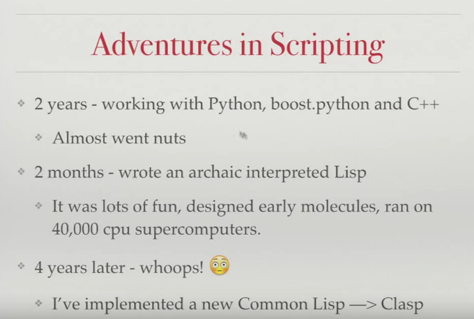
而 Clasp 是以 C++ 實作的，並會把 Common Lisp 程式碼轉成 LLVM IR
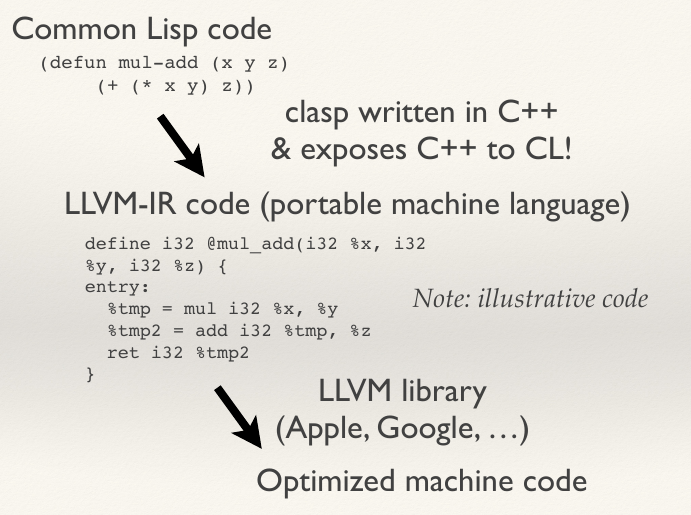
接下來講者解釋了一下它到底要用這套工具做什麼，這邊就去看影片吧 (簡單來說是解決數學計算)。
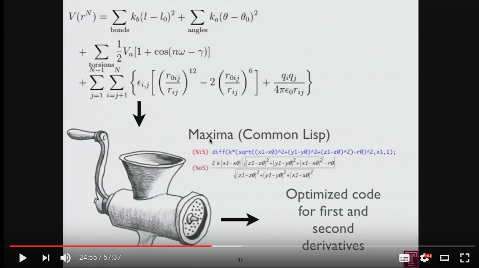
另外一個講者想做的，就是透過 C++ 寫 Common Lisp 模組，並且在 Common Lisp 裡面載入它
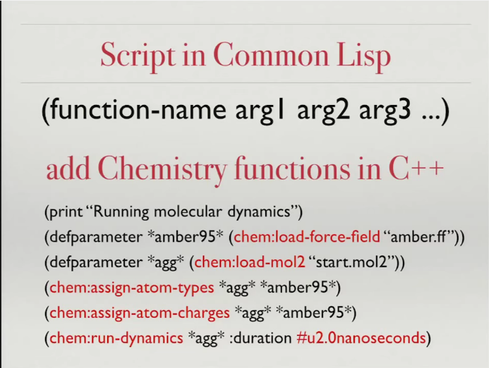
所以為何會選用 Common Lisp 呢? 當然是因為 LISP 很好用阿，只是那些不會用的人一直嫌 LISP 括號太多~
(然後這群人居然可以寫的下 Javascript，也可謂世界奇觀了~)
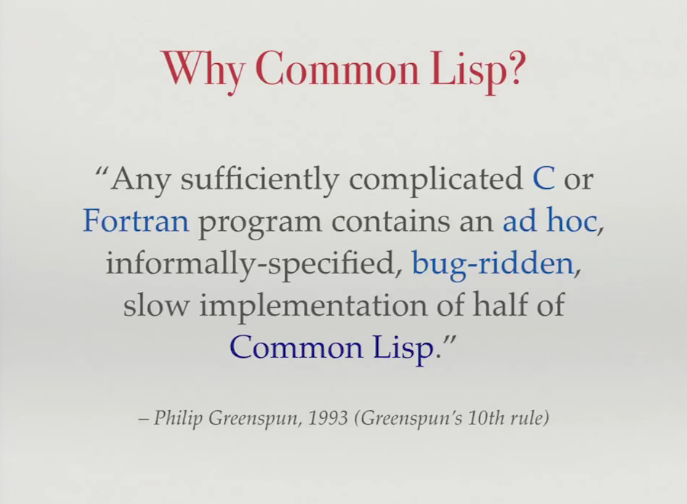
當然，懂 LISP 的人都知道使用 Common Lisp 的其中一個理由一定是因為 LISP 的 Macro 太好用了!!
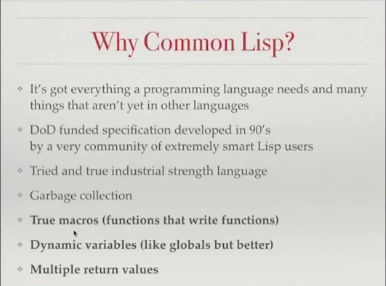
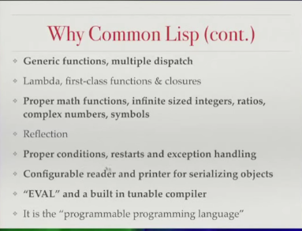
因此講者選用了 Common Lisp 來進行開發，可是這樣子 C++ 的函式庫要怎麼辦呢？總不能重寫吧?原本的 Common Lisp 缺乏了很方便和 C++ 進行調用的接口
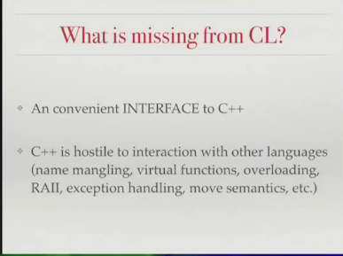
其實 Common Lisp 是有 FFI (foreign Function Interface)接口的，可以直接載入用 C 寫的函式庫，不過 FFI 用於 C++ 就會有其他問題，比如我們需要在寫一個 wrapper 去包 C++ 的 class。
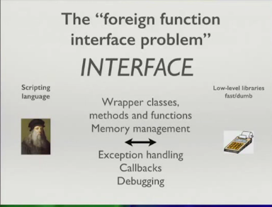
而實際上，在目前的 Common Lisp 上的確需要透過 C 語言去包一層，讓 Common Lisp 可以使用 C++ 函式庫
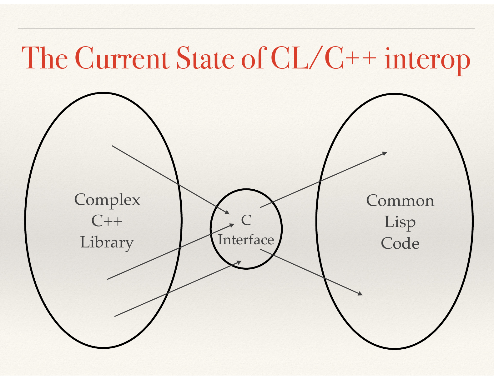
為了解決這個問題，講者想到了是不是可以透過 C++ template 來處理這一塊
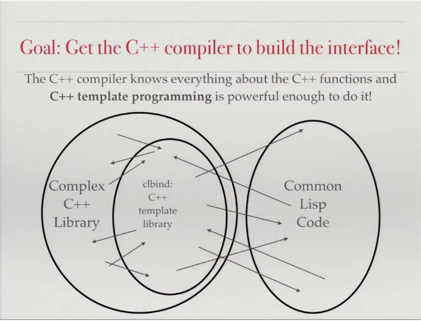
事實上在講者早期撰寫的函式庫中，Boost.Python 這個模組就用到了這樣的概念，透過 C++ template 做個 hook 讓 Python 程式可以呼叫 C++ 函式庫
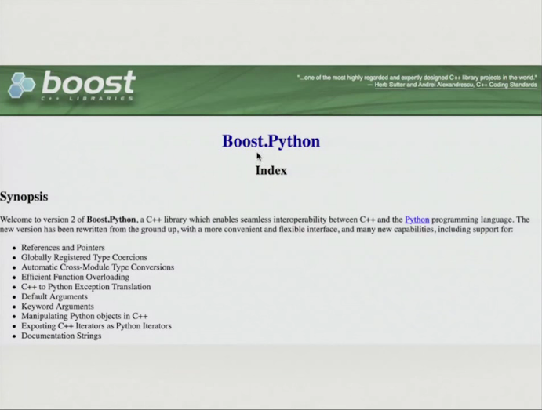
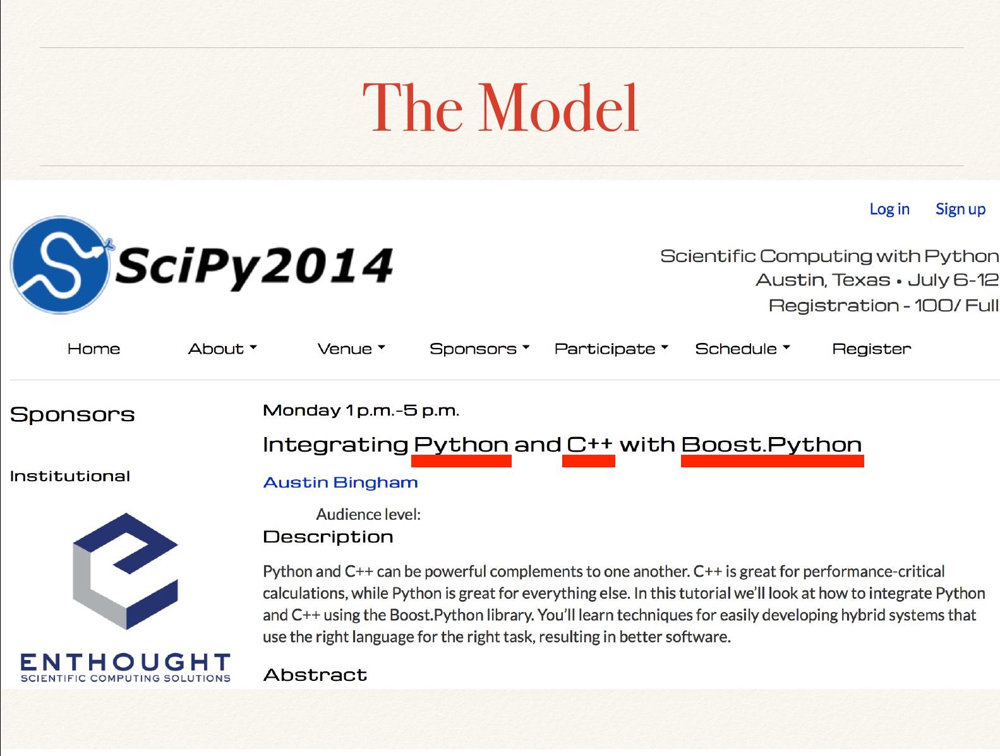
因此，講者就做了 Clasp 這個 Common Lisp 編譯器啦，裡面有些程式碼是從 Embedded Common Lisp 那邊 A 來的呦~
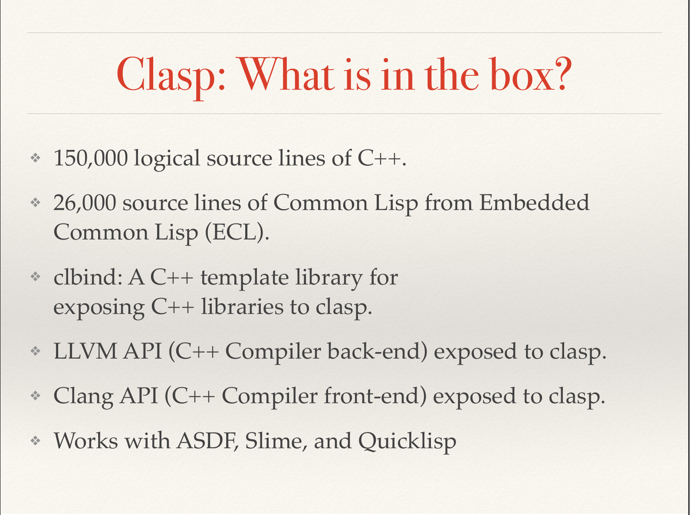
然後這時候講者講了讓我 Orz 的一句話…..
I did not use the compiler because I don't understand it, I wrote a new one.
I wrote a compiler, I never wrote compiler before.
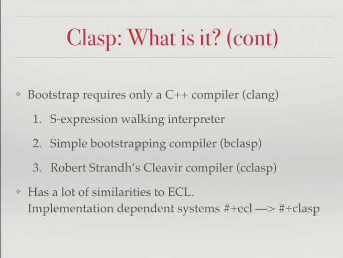
所以 Clasp 到底有哪些特別的呢?
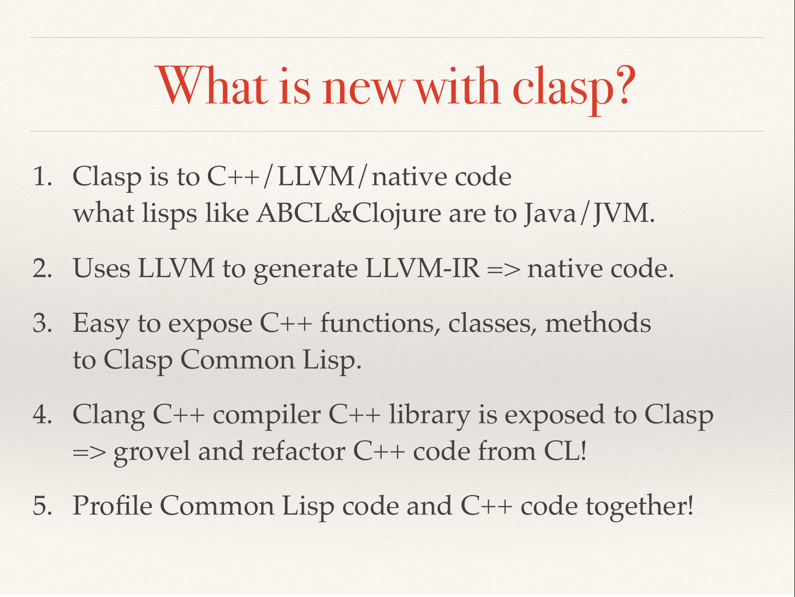
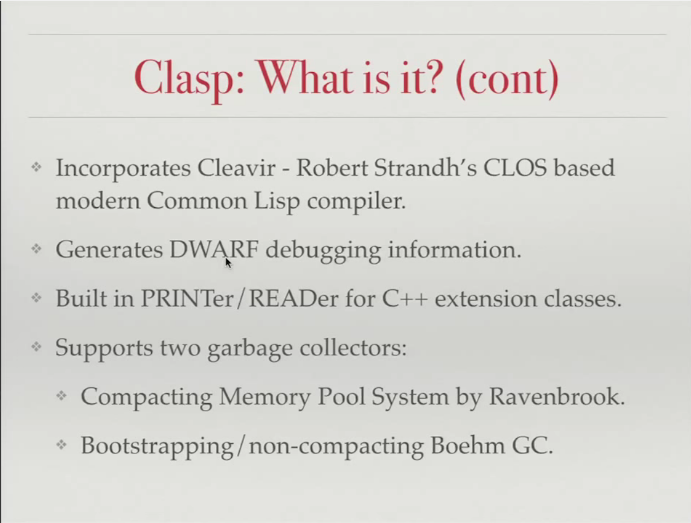
所以的確 Clasp 有實作 GC (Garbage Collector)，並且有兩種實作，也就是說如果我想做 Clojure -> LLVM，我也需要自行實作這些 GC 才行。
而這個編譯器還有一個 pointer 追蹤器，可以追蹤指標的使用並且告知 GC。
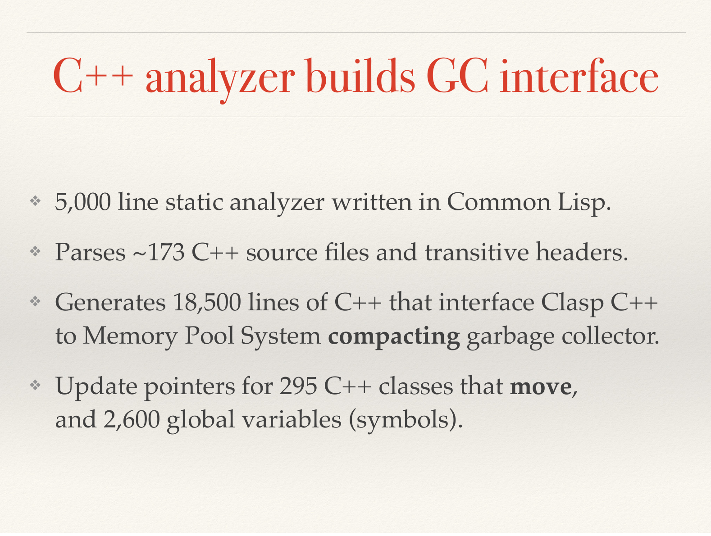
那要怎樣在 Clasp 裡面使用 C++ 函式庫呢? 就這樣 ~
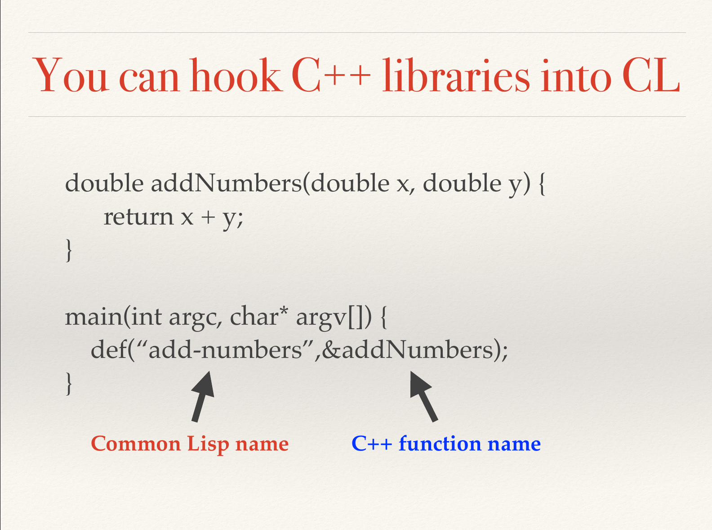
複雜一點的範例則是這樣:
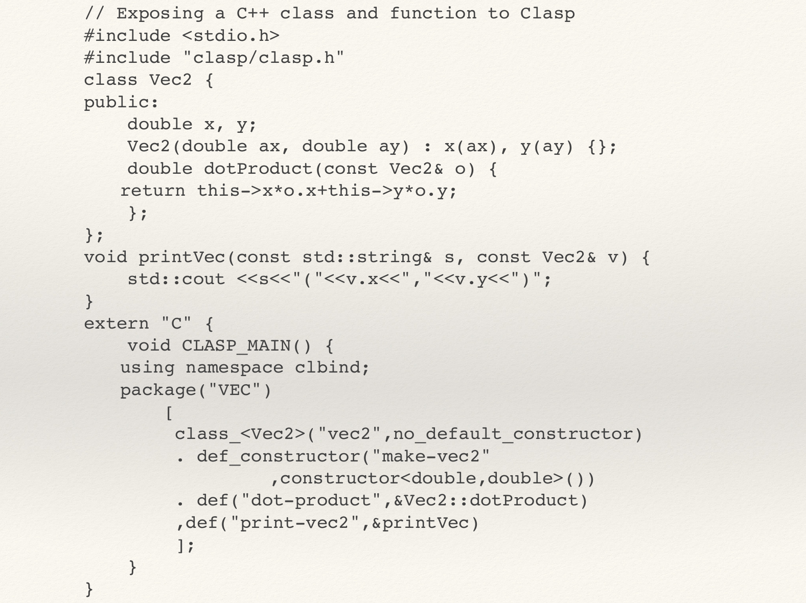
編譯成動態函式後，就可以在 Clasp 裡面這樣的載入
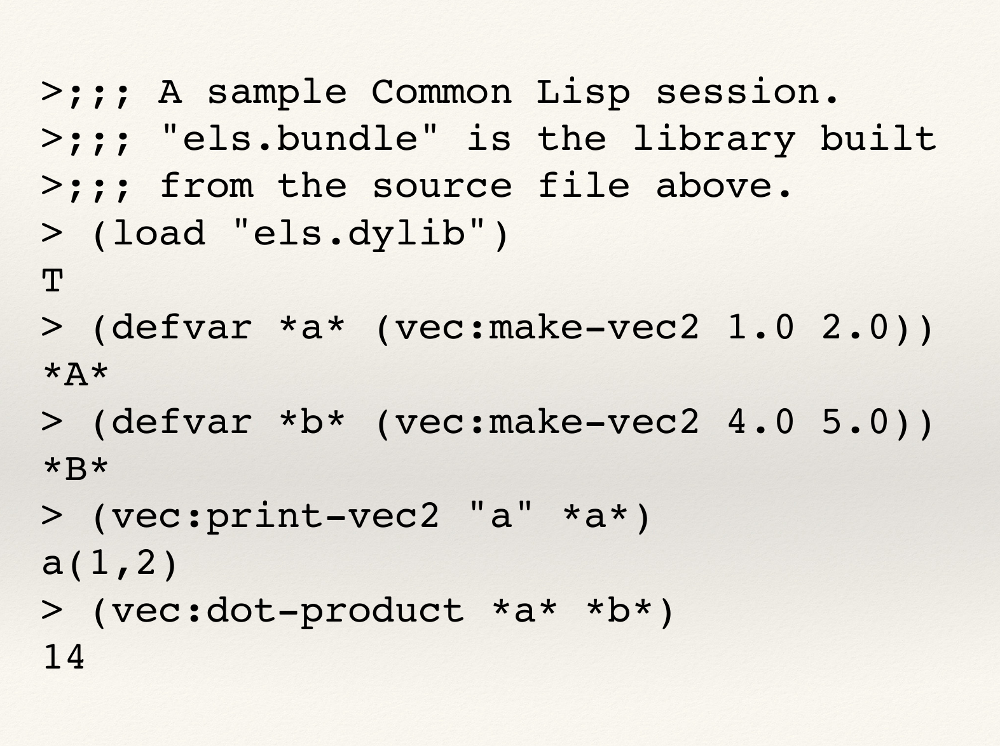
介紹完 Clasp 後，就是 QA 囉，有興趣自己去看 QA ~
如果你聽完這個演講後，對於這個 Common Lisp 實作有興趣，可以去 GitHub 下載看看: